Vanderbilt · The AI-enabled Education Series · facilitator guide · print edition
Minutes, Faster, the facilitator guide

Run of show
| Page | Time |
|---|---|
| Run this course | Before class |
| Welcome | Full 2 min · Core 2 |
| The Chancellor’s charge | Full 3 min · Core: under 1 |
| The evidence | Full 4 min · Core 2 |
| The method | Full 6 min · Core 5 |
| Example: staff meeting | Full 8 min · Core 7 |
| Example: long report | Full 3 min · Core: skip |
| Example: meeting you missed | Full 4 min · Core: skip |
| Guardrails | Full 4 min · Core 3 |
| Practice now | Full 8 min · Core 4 |
| Knowledge check | Full 3 min · Core: skip |
| Recap | Full 3 min · Core 2 |
| Appendix | As needed · Core: skip |
| Total | Full 48 min · Core 25 min |
A week before · Learn it as a learner first
- Run both editions end to end, this one and the learner classroom edition, doing every exercise, including typing a real brief into the practice builder.
- Run the practice transcript through Copilot or Amplify yourself and keep what came back. You will run it live in the session, and you want no surprises about the shape of the output.
- Book a room where pairs can talk and confirm guest wifi works for personal devices; the practice page needs both.
- Decide your path now: Full (48) or Core (25). The rail carries both timings on every page.
- Read your unit’s guidance on recording meetings, so the tough questions on this topic get answers, not improvisation.
The day before · Test the room end to end
- Test recording and transcription in a real Teams meeting with yourself. Start a meeting alone, select More actions > Record and transcribe > Start recording, talk for a minute, stop, and confirm the transcript shows up in Recap and downloads.
- Test the projector with this facilitator link and confirm the script rail is readable from where you’ll stand.
- Scan the welcome QR from the back of the room. It must land on the learner classroom edition, not this page.
- Log in to Copilot or Amplify and leave it ready; the live transcript demo depends on it.
- Rehearse the tough-questions bank out loud: “do I have to tell people I’m recording,” “can I record a disciplinary conversation,” “the transcript got someone’s words wrong,” “is the AI summary the official record.” Your answers: the tools announce it and you say it out loud anyway; not without guidance, ask HR first; that is what the confirm pass is for, ask the speaker; no, the summary links to the transcript and your unit’s retention practice governs the record.
30 minutes before · Set the stage
- Welcome page up (the next page, with the QR) as people arrive, so scanning starts before you do.
- Close every other tab and silence notifications on the machine that’s projecting.
- Test the arrow keys, the copy buttons, and one run of the practice transcript in your logged-in tool.
- Write PARKING LOT on the whiteboard. Recording-policy questions you can’t answer go there with a name, and you follow up by email.
Materials · What has to be in the room
- Projector with this facilitator edition open.
- Facilitator laptop with Copilot or Amplify logged in for the live transcript demo.
- Learner devices, joining through the welcome QR into the classroom edition.
- A few printed takeaways for people without a device.
- Whiteboard or flip chart for the parking lot and the backup URL.
Pre-work invite (copy and paste)
Subject: Minutes, Faster · [day], [time], [room] Hi everyone, On [day] at [time] in [room] we’re running Minutes, Faster, a short session from The AI-enabled Education Series on turning meetings and long documents into decisions, action items, and takeaways people actually read. Two things before you come: 1. Bring a phone or laptop. You’ll follow along on your own screen. 2. Sign in to Copilot or Amplify once with your Vanderbilt account, so login isn’t the first thing you do in the room. Think of one meeting you run or attend whose minutes are always late; you’ll brief its summary in the session. Nothing you type in the session is collected or sent anywhere. See you there, [Your name]
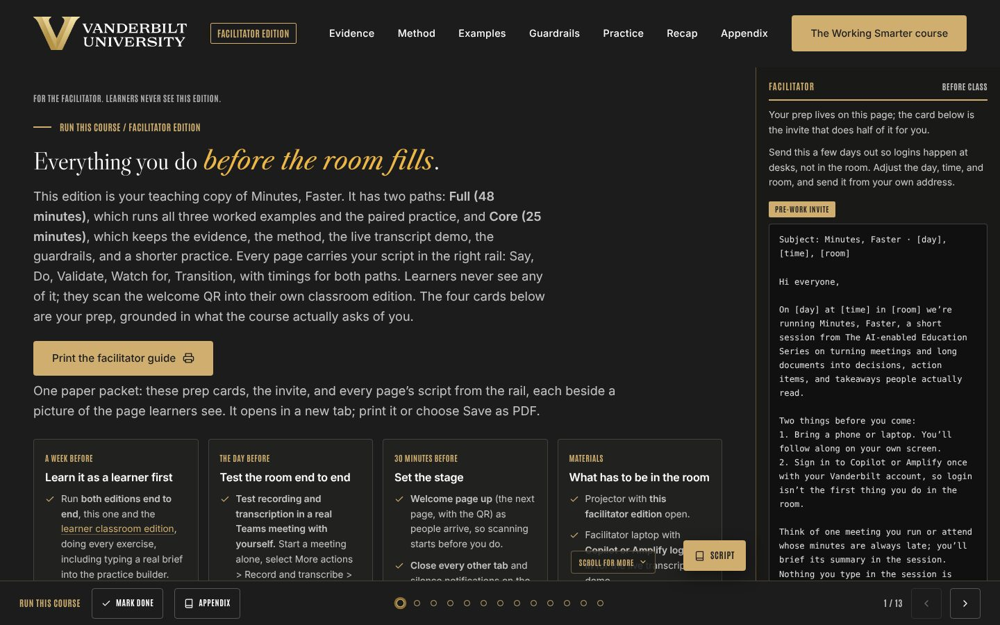
Run this course Before class
Your prep lives on this page; the card below is the invite that does half of it for you.
Send this a few days out so logins happen at desks, not in the room. Adjust the day, time, and room, and send it from your own address. The invite text is on the first page of the facilitator edition and in the printed packet below.
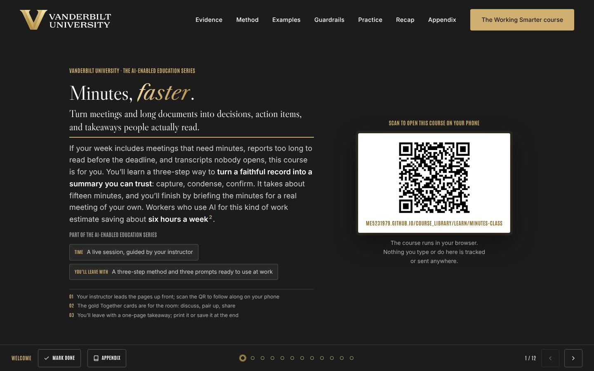
Welcome Full 2 min · Core 2
Get every device into the learner edition and set the deal for the session.
Say
“This is Minutes, Faster, part of The AI-enabled Education Series. In this session you’ll learn a three-step way to turn meetings and long documents into decisions, action items, and takeaways people actually read. Scan the QR and the course opens on your phone. Everything I do up here, you can do down there.”
Do
- Have this page projected as people arrive; the QR does its work before you start talking.
- Give the room two minutes to scan and open the course; the whiteboard URL is the backup.
- Point out the bottom-bar arrows so people can follow along page by page.
- Say plainly that nothing they type is stored or sent anywhere.
Validate: 80%+ of the room has the course open on a phone or laptop before you turn the page.
Watch for: Guest wifi stalls and half the room can’t load it. Point at the URL on the whiteboard, ask people to share a neighbor’s screen, and keep moving; don’t troubleshoot wifi in front of thirty people.
Transition: “Before the evidence, one page on why the university cares how minutes get made.”
Core path: Same page, same two minutes. The clock savings come later.
The Chancellor’s charge Full 3 min · Core: under 1
Connect the method to the Chancellor’s vision so the course lands as institutional strategy, not a productivity tip.
Say
“One page on why the university cares how minutes get made. The Chancellor’s vision has no hedge in it: Vanderbilt will define the great university of the 21st Century and be it, operating at uncommon speed, agility, and scale. Our motto has always been the dare, Crescere aude, dare to grow, and a dare that size cannot run on decisions that evaporate by lunch. Speed needs a record that keeps up, and that record is the minutes you are about to learn to make.”
Do
- Read the vision sentence from the screen word for word; don’t paraphrase the one sentence the page exists for.
- Walk the three focus cards left to right, one sentence each, and land on the At-your-desk lines.
- Point at the flywheel card and trace the loop out loud: reputation attracts talent, funding, partnerships, and access, which build the reputation.
- Hold it to three minutes; this page frames the course, it is not the course.
Validate: Ask “what do confirmed minutes have to do with speed and scale?” and hear some version of: fast operations need a record people can trust.
Watch for: Eye-rolls at strategy talk. Don’t argue for the vision; point out the next page is evidence, not aspiration, and keep moving.
Transition: “That’s the why. Here’s the evidence that the load is real.”
Core path: 25-min core: under a minute. Read the vision sentence, gesture at the three focuses, and move on.
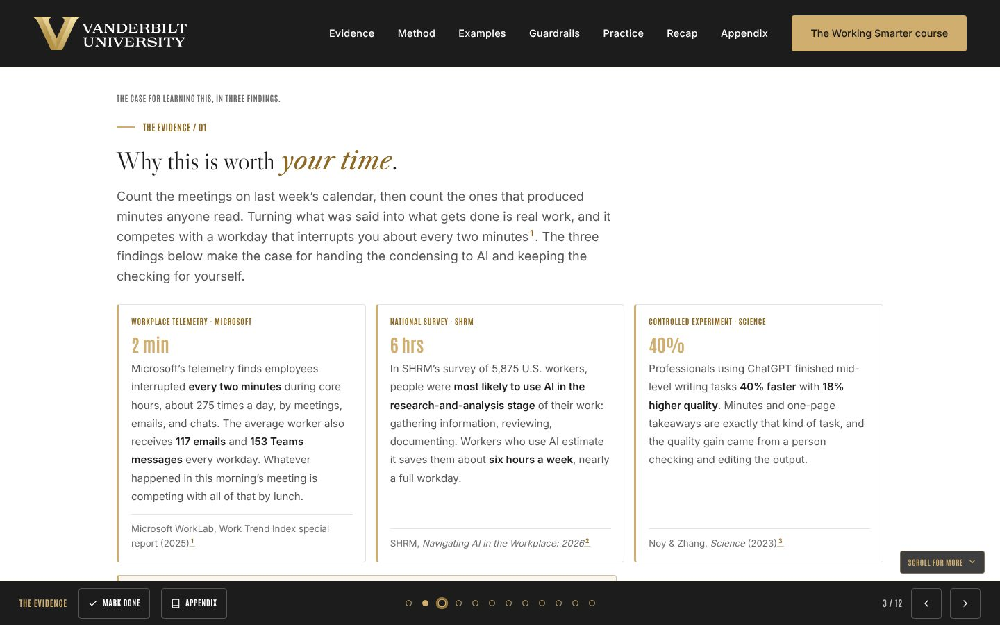
The evidence Full 4 min · Core 2
Ground the method in the three findings so it lands as research, not enthusiasm.
Say
“Microsoft’s telemetry says you’re interrupted about every two minutes, and the average worker fields 117 emails and 153 Teams messages a day. SHRM finds workers who use AI save about six hours a week, and that they use it most for exactly this kind of research-and-analysis work. The catch, from the same survey: about four hours a week goes to fixing AI output nobody checked. This course is about keeping the six and losing the four.”
Do
- Project the three evidence cards and give each one sentence, not a lecture.
- Run the gold Together card: how many meetings last week, and how many produced minutes anyone read?
- Take two or three answers out loud; the stories do the persuading.
- Mention that every number is cited in full on the Appendix page, one tap away in the bottom bar.
Validate: At least two people admit their minutes go out late, unread, or not at all.
Watch for: Someone challenges the numbers. Don’t defend from memory: jump to the Appendix, show the citation, and offer to talk after. The course survives skepticism; improvised statistics don’t.
Transition: “Here’s the method that turns a transcript into minutes. It fits on one page.”
Core path: 25-min core: skip the share-out. State the two-minute and six-hour findings in one sentence and turn the page.
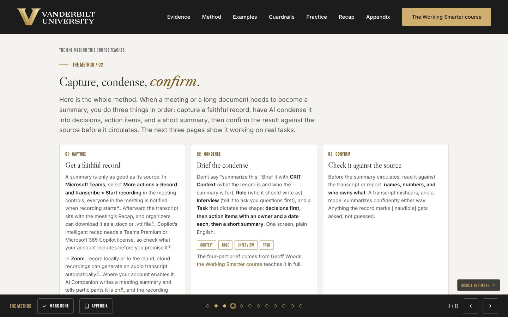
The method Full 6 min · Core 5
Teach Capture, Condense, Confirm and the CRIT brief. This is the one page they must remember.
Say
“Three steps in order. Capture: get a faithful record. In Teams that’s More actions, Record and transcribe, Start recording; everyone is notified, and the transcript is waiting for you afterward. Condense: brief it with CRIT, and make the Task line dictate the shape: decisions first, then action items with an owner and a date each, then a short summary. Confirm: read it against the transcript before anyone acts on it, because a transcript mishears, and a model summarizes confidently either way.”
Do
- Walk the three cards left to right, spending your time on Capture’s mechanics and Confirm’s reasons.
- Show where Record and transcribe lives in Teams if you have it open; don’t start a real recording.
- Point at the gold rule strip and read it word for word: the transcript remembers the meeting, and you confirm what it heard.
- Run the Together card: pairs explain Capture, Condense, Confirm back to each other in under a minute.
Validate: Cold-call one pair afterward: they can name the three steps and say what the Task line dictates.
Watch for: Licensing questions about Copilot’s intelligent recap. Don’t guess at what the account includes; that’s a parking-lot item for ITS, and the method works from the plain transcript either way.
Transition: “Enough theory. Let’s turn a real transcript into minutes, live, and see what it gets wrong.”
Core path: 25-min core: keep everything but the pair activity. Name the steps yourself, then cold-call one person.
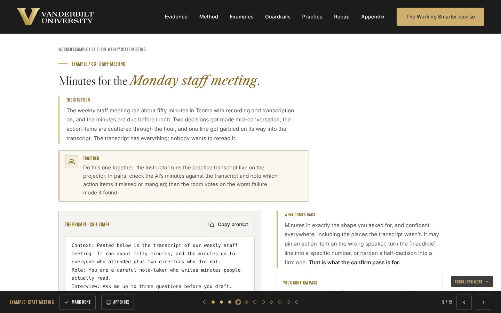
Example: staff meeting Full 8 min · Core 7
The live demo: the room watches a transcript become minutes and hunts for what the AI missed.
Say
“Fifty minutes of Monday staff meeting, recorded and transcribed. Two decisions and at least four action items are in there, and one line the microphone lost. I’m running the prompt with the practice transcript right now. When the minutes come back, work in pairs: check them against the transcript, and find what the AI missed or mangled.”
Do
- Run the prompt plus the practice transcript live in Copilot or Amplify on the projector.
- While it generates, have pairs open the practice transcript on their own devices.
- Give pairs two minutes to compare the AI’s minutes against the transcript: wrong owners, wrong dates, missed items.
- Take the room’s vote on the worst failure mode found, and land on the [inaudible] session cap: whatever the model did with it, the fix is asking the speaker, never letting it guess.
Validate: At least one pair catches what the model did with the [inaudible] session cap.
Watch for: The model behaves perfectly and flags the [inaudible] line itself. That isn’t a failed demo; point out the prompt told it to flag instead of guess, and ask the room what “summarize this transcript” would have done with the same line.
Transition: “Meetings talk to you. Next: thirty pages that won’t read themselves.”
Core path: 25-min core: keep the live run; it’s the heart of the session. One comparison out loud instead of the pair hunt and vote.
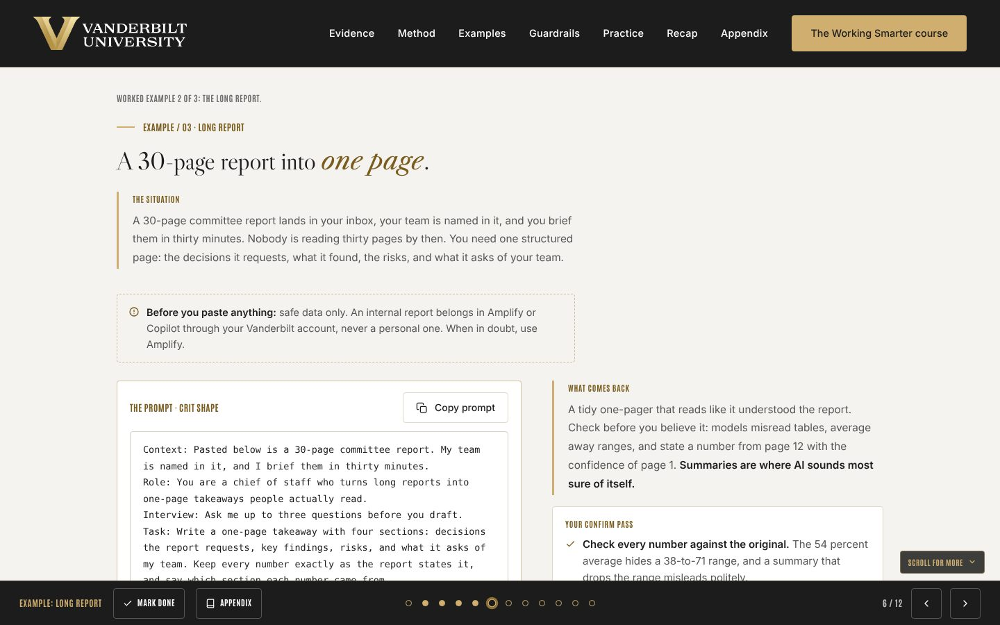
Example: long report Full 3 min · Core: skip
Same method on a document, plus the data rule: a pasted report needs an approved home.
Say
“A thirty-page committee report, your team named in it, thirty minutes before you brief them. Same three steps, new source. And notice what changed on this page: the moment you paste a report, where you paste it matters.”
Do
- Point at the amber before-you-paste warning first, before the prompt.
- Show the Try-it row: Amplify recommended, ChatGPT EDU greyed out, and say the reason out loud.
- Open the fictional excerpt and point at the numbers a summary most often bends: the 38-to-71 occupancy range and the dollar figures.
- Read the first confirm line: check every number against the original, because summaries are where AI sounds most sure of itself.
Validate: Ask “which tool takes a pasted internal report?” and hear Amplify or Copilot back from the room.
Watch for: The room disappearing into the excerpt on their phones. Tell them it’s fictional and it will still be there after; only the numbers matter right now.
Transition: “Reports you brief. Some meetings you just plain miss.”
Core path: 25-min core: skip this page. As you leave the demo, say the takeaway carries the report prompt and the catch-up prompt.
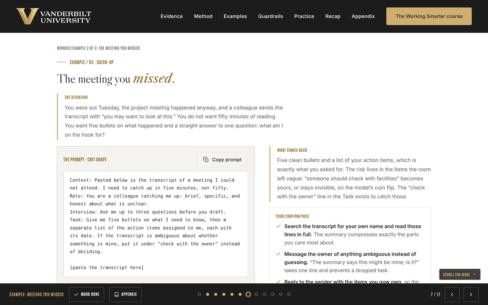
Example: meeting you missed Full 4 min · Core: skip
The catch-up pattern, and the rule that ambiguity goes to the owner, not to a guess.
Say
“You missed Tuesday’s meeting and the transcript lands in your chat. You want five bullets and one honest answer: what am I on the hook for? Look at the Task line: anything ambiguous goes under “check with the owner” instead of being decided for you. That line is the whole trick.”
Do
- Walk the prompt on screen; don’t run this one live.
- Point at the confirm line about messaging the owner of anything ambiguous rather than guessing.
- Give one sentence to the last confirm step: replying to the sender with your items closes the loop and shares the record.
- Tell the room all three prompts are on the printed takeaway, so nobody needs to copy anything now.
Validate: Ask “the summary says an item might be yours; what do you do?” and hear: message the owner, don’t guess.
Watch for: Someone proposing the AI email the owners itself. The confirm pass is human on purpose; the message comes from you, in your words.
Transition: “Three examples, one pattern. Before you try your own, four rules that keep it safe.”
Core path: 25-min core: skip this page. The guardrails page carries the confirm rule on its own.
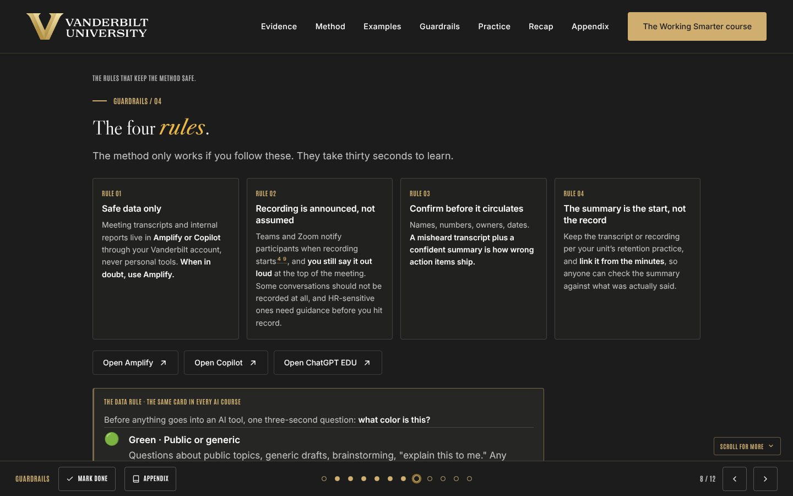
Guardrails Full 4 min · Core 3
Make the four rules stick, especially safe data and recording etiquette, before anyone runs their own.
Say
“Four rules, thirty seconds each. Safe data only: transcripts and internal reports live in Amplify or Copilot through your Vanderbilt account, and when in doubt, Amplify. Recording is announced, not assumed: the tools notify people, and you say it out loud anyway; some conversations shouldn’t be recorded at all, and HR-sensitive ones need guidance first. Confirm before it circulates. And the summary is the start, not the record: keep the transcript per your unit’s retention practice, and link it from the minutes.”
Do
- Project the four cards and read each headline; add one sentence each, not a paragraph.
- On rule two, take the questions this page always raises: “do I have to tell people I’m recording” and “can I record a disciplinary conversation,” with the answers you rehearsed in prep.
- On rule one, ask the room for examples of what counts as internal from their actual work.
- Show the three tool buttons and name the default this room should use.
Validate: Ask “an HR-sensitive conversation needs summarizing; what happens first?” and hear: ask for guidance before recording.
Watch for: A policy question you can’t answer, like a specific records-retention rule. Don’t guess at policy. Put it on the parking lot with a name next to it and follow up by email.
Transition: “Those are the rules. Now the part that makes this course stick: you brief something real.”
Core path: 25-min core: cut the room examples. Read the four rules and run the one HR-sensitive check question.
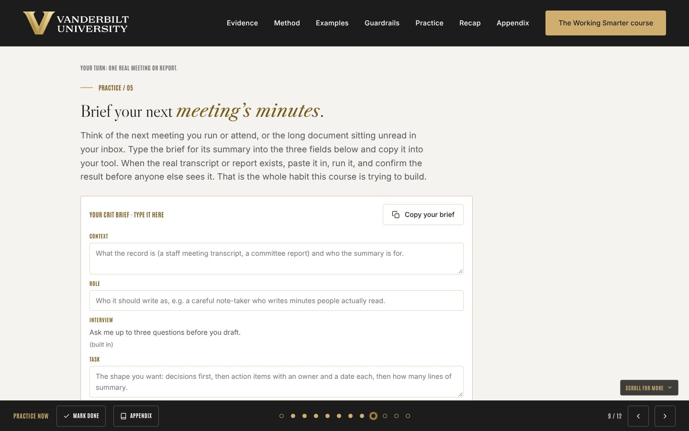
Practice now Full 8 min · Core 4
Everyone leaves having briefed the minutes for a real meeting or report. This page is the course.
Say
“Think of the next meeting you run or attend, or the report sitting unread in your inbox. Don’t write its summary; brief it. Pair up. Interview your partner about their meeting, fill in the three fields for them, then swap. In eight minutes I’ll ask a few pairs to read a brief to the room.”
Do
- Put the builder on the projector and walk the three fields once, fast.
- Pair the room; an odd person joins a pair as a second interviewer.
- Circulate while pairs type on their own devices; nudge vague Task lines toward decisions, owners, and dates.
- Debrief: two or three pairs read a brief aloud, and you ask the room what the AI would still have to guess.
Validate: Every pair has all three fields filled on at least one device before the share-out.
Watch for: The “my meetings don’t need minutes” person. Everyone has one meeting that leaks action items or one document they’re avoiding; help them find it, or hand them the practice transcript as a fallback.
Transition: “You’ve each briefed something real. Three quick questions to prove the method stuck.”
Core path: 25-min core: solo instead of pairs. Everyone briefs their own meeting, and one volunteer reads theirs aloud.
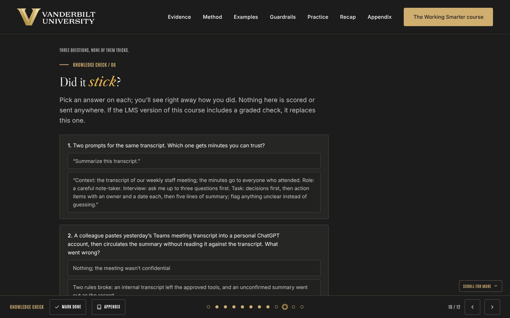
Knowledge check Full 3 min · Core: skip
A room vote that surfaces the three failure modes without feeling like a quiz.
Say
“Three questions, no grades, and nothing leaves the room. Look up here for each one, vote by show of hands, and then somebody tells me why.”
Do
- Project question one and read both prompts aloud; vote by hands.
- Tap the winning answer on screen so the room sees the explanation.
- Repeat for the personal-account question and the [inaudible] question.
- Where a vote splits, give the two sides thirty seconds to argue before you reveal.
Validate: Near-unanimous hands on question two, the safe-data one. If that one splits, reteach rule one now.
Watch for: People answering on their phones before the vote. Ask them to keep eyes up during each vote and tap their own answers after; the argument is the point, not the tap.
Transition: “Three for three. Last page: what you’re leaving with, and what you do tomorrow morning.”
Core path: 25-min core: skip the vote. Ask the [inaudible] question only, out loud, on the way to the recap.
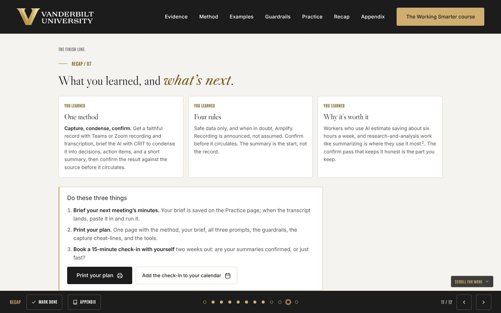
Recap Full 3 min · Core 2
Land the three next actions: the next meeting’s brief, the printed plan, the two-week check-in.
Say
“One method: capture, condense, confirm. Four rules. And the evidence says the hours are real. Three things now. Brief your next meeting’s minutes; yours is already saved from practice. Take the one-page plan; the Teams and Zoom capture cheat-lines are on it. And book the fifteen-minute check-in two weeks out: are your summaries confirmed, or just fast?”
Do
- Walk the three You-learned cards in one sentence each.
- Point at the print button; hand your printed takeaways to anyone without a device.
- Have everyone tap the calendar button and add the two-week check-in now, not later.
- Name the Oracle Learning shelf for people who want more, and end on time.
Validate: You see phones come out for the calendar file, instead of polite nods.
Watch for: Running past the end. If you’re at time, the recap is three sentences and printouts by the door; never trade the ending for the shelf.
Transition: “The appendix has every source, and the course stays online at the same link. Thanks for your time; now go send minutes someone will actually read.”
Core path: 25-min core: same three actions, one sentence each. The calendar tap is the one to keep.
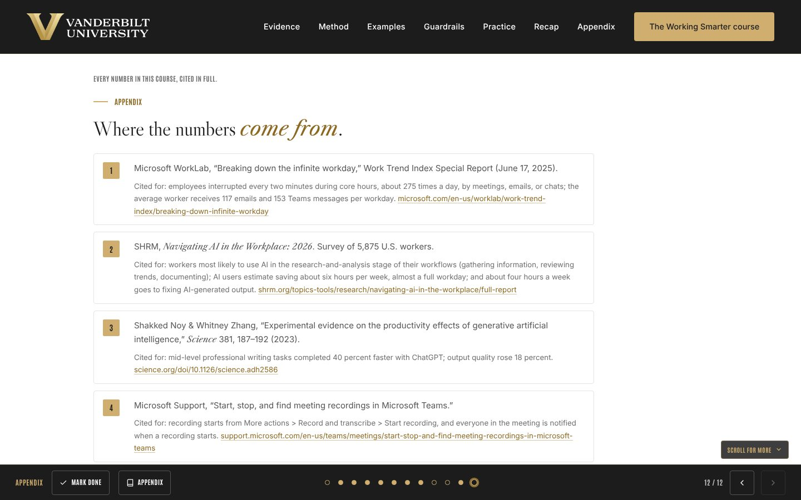
Appendix As needed · Core: skip
Reference, not a page you teach. Open it the moment a number gets challenged.
Say
“Every number in the course, cited in full, including the Microsoft and Zoom support pages behind the capture steps. It stays online at this link, so nobody needs to copy anything down.”
Do
- Show it for ten seconds so the room knows it exists.
- Return to it live whenever someone questions a statistic; the Appendix button in the bottom bar jumps here from any page.
- Point out the CRIT credit to Geoff Woods and the Working Smarter course link for anyone who wants the full framework.
Validate: You can put the Microsoft two-minute interruption citation on screen within five seconds of being asked.
Watch for: A methodology debate in the last minutes. One citation on screen, then “happy to dig in after”; protect the ending.
Transition: “That’s the whole course. I’ll stay a few minutes for anything on the parking lot.”
Core path: 25-min core: skip; leave it on screen while people file out if you like.
Generated from the facilitator edition's page scripts and the learner edition on screen. The on-screen facilitator edition lives at ./ alongside this guide.